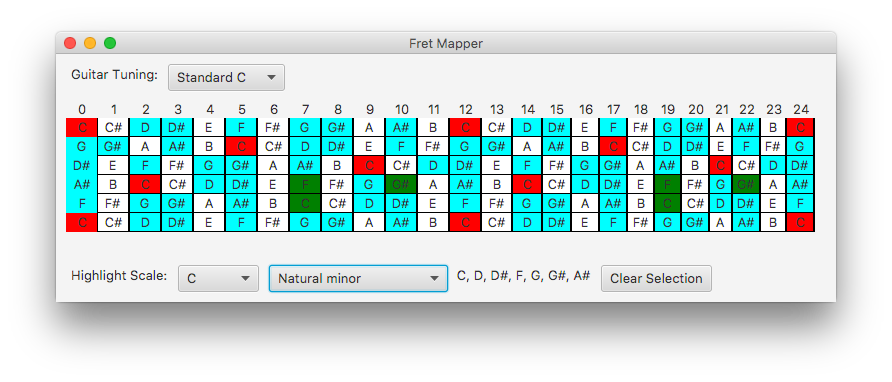

Building and distributing a cross platform desktop UI in Scala
Is ScalaFX the way to go?
2018-09-23
Some time ago I wrote about my experience writing a small Desktop UI in Go using libui. I ended off by saying that I would attempt something in Kotlin next, this project did start in Kotlin, however I switched to Scala after a short time for a reason based solely on personal preference(Kotlin is a better Java but a worse Scala in my opinion). But enough of that, here is what happened when I finally settled on a tech.
The Application
For those interested, the project was another small one to solve a simple problem I have, I like to play guitar in Standard C tuning, and I have a Floyd Rose bridge so I don’t really want to re-tune the guitar every time I play something that isn’t Melodic Death Metal. I wanted to be able to click on the notes as they are written in a tab and then change the tuning of the virtual guitar to my tuning so I can see how to play them.
The UI Framework
The first step, as with the Go Application, was to find a UI library. The Awesome Scala list of UI options is… well not really a list, and at the time of writing still only lists ScalaFX, which is a UI DSL written in Scala that utilises JavaFX. I did however find myself creating elements and then adding them to parents in a more traditional style rather than using the DSL just to get things working, but I do intend to go back at some point and possibly refactor this (haha, who am I kidding?).
One of the interesting parts of JavaFX is that you can theme it, though the default theme did not load at all when I created an app out of the box. A quick Google search turned up a solution that worked, simply add the following to your build.sbt:
//need this to have styles
unmanagedJars in Compile += {
val ps = new sys.SystemProperties
val jh = ps("java.home")
Attributed.blank(file(jh) / "lib/ext/jfxrt.jar")
}
Another thing to keep in mind if you are generating a project from a template is that we are limited to Scala 2.11 and older. I personally don’t see this as much of a limitation, at least not for my uses, but if you require 2.12 goodness, this may be a deal breaker.
Deployment
Of course, once I got the app running, there was the matter of distribution. A good way to get out a native installer for Scala app is to use sbt-native-packager. After some exploration I settled on using their JDK packager plugin, which generates an installer packager for whichever operating system you are running on.
The trouble is, unlike in Golang, we can’t build all of these packages on one operating system, so we need a CI in each of the target operating systems if we want to do automated deployment. We also have another issue, for the Go app I used a tool called GoReleaser, which will automatically push the assets from a successful tagged Go build to GitHub releases.
It made sense to solve the latter problem first, since once I had the build process, all I would need to do is get it working on CircleCI in order to cover Windows. Luckily there is a little tool (once again written in Go) called ghr which focuses just on pushing assets to GitHub but doesn’t have any features for checking the tag before doing so. I ended up getting that working with just a simple bash script.
#!/bin/sh
if git describe --exact-match --tags HEAD
then
echo "Found tag"
tag=$(git describe --exact-match --tags HEAD)
echo "Found tag $tag"
sbt jdkPackager:packageBin
ghr -u divanvisagie $tag target/universal/jdkpackager/bundles
else
echo "Tag not found"
fi
And this PowerShell script for the Windows build.
$tag = (git name-rev --name-only --tags HEAD)
if ($tag -like '*undefined*') {
Write-Output "This branch is not tagged, skipping deploy"
} else {
Write-Output "Tag is $tag, Initiating deployment process"
mkdir .\Tools
$path = ".\Tools"
$file = "$path\ghr.zip"
(New-Object Net.WebClient).DownloadFile('https://github.com/tcnksm/ghr/releases/download/v0.5.4/ghr_v0.5.4_windows_amd64.zip',$file)
(New-Object -com shell.application).namespace($path).CopyHere((new-object -com shell.application).namespace($file).Items(),16)
.\Tools\ghr.exe -u divanvisagie $tag target/universal/jdkpackager/bundles
}
After testing it was just a matter of setting up Circle CI to run the script in Windows and setting up Travis to do builds for both Linux and macOS.
And with that, any build I tag with a version will be deployed to releases whenever it successfully builds on master.
Conclusion
In the end this was actually quite a satisfying experience. Even though some parts of the process took longer to get going than in Golang, JavaFX is feels more complete and there were no annoying hiccups of something working on one platform and not the other. And if you also tune your Guitar like a strange person, maybe give fret-mapper a shot.